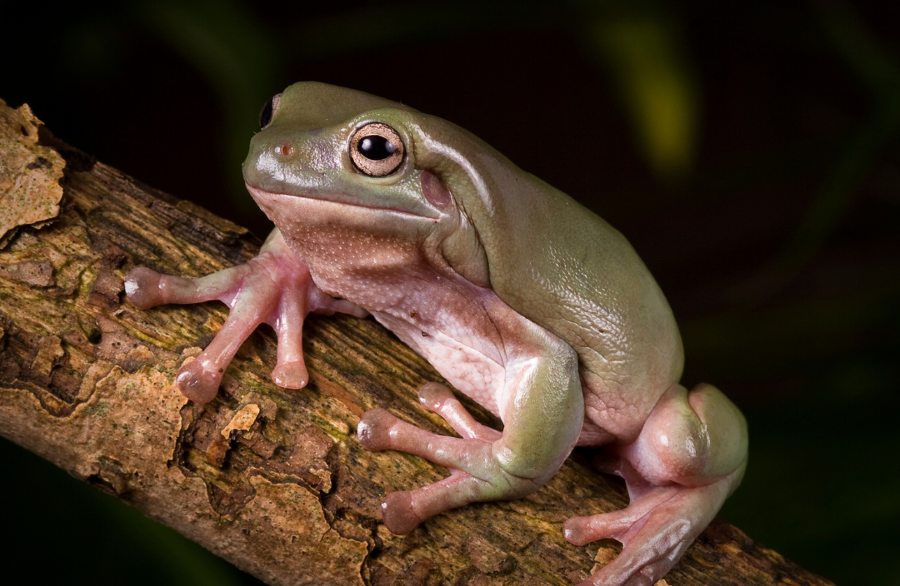

Welcome to Basil's Reptile and Amphibian Rescue!

The dedicated team at Basil's Rescue are driven by a single goal: to do our part in making the world a better place for all companion reptiles and amphibians. Our decision-making process is driven by informed, comprehensive empirical studies and high quality data evaluation. We strive to build productive relationships and make a positive impact with all of our pursuits and enterprises. Education is a fundamental part of our ethos and we work closely with our partners at Hadlow College to ensure the next generation of animal keepers are provided with the best possible practical and academic knowledge of reptile and amphibian husbandry.
Since 1989 Basil's Rescue has been at the heart of efforts to conserve native amphibians and reptiles. Throughout this time we have initiated a number of national and regional projects, and remained a central voice for public advice on issues surrounding reptile and amphibian conservation. The Rescue's work falls into three strands: on the ground conservation, environmental education and communication (the provision of advice/information).
Meet the animals!

Bloo is our male Pacific Blue Tailed Skink Emoia caeruleocauda. His favourite food is dubia roaches. He is
quite shy and likes to hide under his rock. He is approximately 6 years old and was surrendered to us in 2019. He was sadly neglected
and was severely undernourished when he was rescued. Thankfully after a few years of love and care he is looking healthy
and happy!
The Pacific Blue Tailed Skink is widespread across areas of Indonesia, the Phillipines, Malaysia, New Guinea and many Pacific islands.
They are not endangered and are usually imported wild caught, although individuals have been bred in captivity. Adults grow up to 6 inches,
but 60% of this is tail length, so the body is usually only 1-2 inches in length with males being slightly
larger than females.

Rex is our male corn snake Pantheropis guttatta. We adopted him from a breeder in 2018 and is currently 7 years old. He
is mostly fed mice and occasionally gets a quail as a treat. Rex is calm and docile and appreciates the odd head scratch!
Corn snakes are an easily tamed snake that are bred in captivity in large numbers, widely available in a massive variety of colours and patterns. They
are relatively small and can grows\ from 3 to 6 feet in length and remain a slender and light weighted for easy handling.The corn snake has a lifespan
that is usually described as 15-20 years, however the oldest corn snake recorded in captivity was over 32 years old and we’ve personally experienced
many of our corn snakes living into the mid 20s with excellent care.

This is Spyro, our female bearded dragon Pogona vitticeps. She is 13 years old - the oldest animal we have in captivity!
She may be old but she is still feisty and likes to annoy her tankmate, Pip. Spyro loves eating mangoes, papayas and crickets and dubia roaches,
her favourite treat!
Bearded dragons reach a length of around 22 inches, half of which is tail length. Native to Australia, the bearded dragon is a diurnal (daytime)
reptile that can live in excess of 10 years in captivity. The natural colour of a wild bearded dragon is one that blends in well with the sand,
rocks and terrain of their native rocky and beach habitat in Australia, so usually beige, grey and brown. In captivity there are a wide range of
colours that are line bred as well as genetic morphs, so you’ll see a range of colours from white to bright red.
Want to see more?
We are open and free to visit from 10am-4pm every day of the week, including bank holidays!
Sign up for our newsletter
Sign up to our newsletterfor all the latest updates on tours, updates and fundraising news and events!